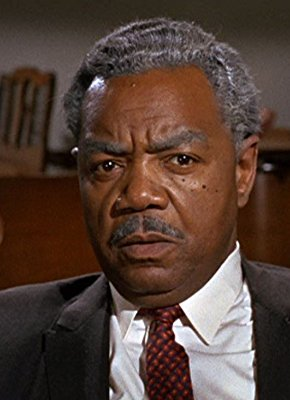

Meine Filme

Darsteller Roy Glenn
Alle Darsteller
Nr.
Titel
Jahr
FSK
Minuten
Auflösung
IMDB
Meta
Genre
4928
Flucht vom Planet der Affen
1971
12
97
1080p
6.3 / 10
0
Action
9109
Hängt ihn höher
1968
16
114
1080p
7.0 / 10
0
Western
9524
Latigo
1971
16
92
1080p
6.9 / 10
0
Komödie
8697
Rat mal, wer zum Essen kommt
1967
6
108
1080p
7.8 / 10
0
Drama
11832
Süßer Vogel Jugend
1962
12
114
720p
7.3 / 10
0
Drama
9643
Terror in Block 11
1954
18
80
1080p
7.0 / 10
0
Drama
2119
Weg nach Westen, Der
1967
12
122
1080p
6.2 / 10
42
Abenteuer